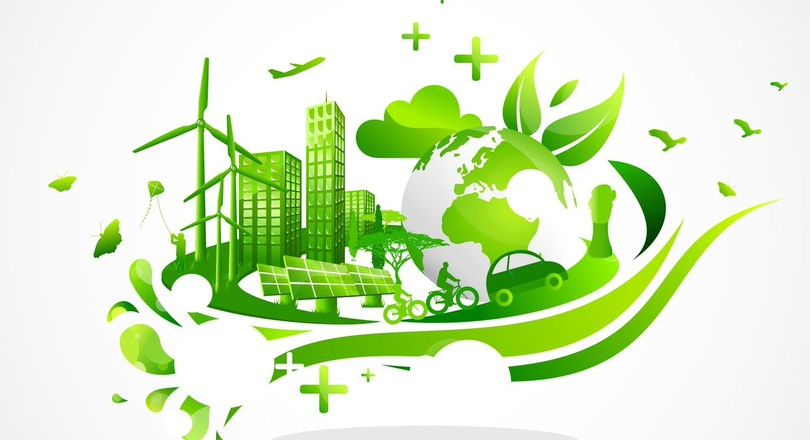

Een Duurzaam Initiatief

Bij de Vegan Junk Food Bar staat het milieu centraal. Door hun plantaardige gerechten beperken ze de CO2 en watervoetafdruk.
Er is namelijk ruim 15.000 liter water nodig om een kilo rundvlees te verwerken, en wel 4.000 liter per kilo kip.
Vergeleken met bijvoorbeeld aardappelen, waar je maar 287 liter water per kilo verbruikt, is dat veel minder.
Met een plantaardige maaltijd bespaar je zo 2000 liter water, 1,4m2 ontbossing en 2,25 kg CO2.
Verpakkingsmaterialen
De verpakkingen van VJFB zijn gecertificeerd en dragen ook bij aan de bosbouw.
Ze noemen het een continue proces waarbij ze streven om lege verpakkingen niet meer als afval te zien,
maar als de basis voor een nieuw product. Daarnaast produceert VJFB ook zelf hun ingredienten, en bespaart zo ook op het milieu.
Een Andere Mindset
De Vegan Junk Food Bar is een nieuw, toekomstgericht junk food concept, die een nieuwe manier van denken handhaaft wat betreft duurzaamheid.
Zij geloven dat een plantaardige levensstijl de beste optie is voor planeet, mens en gezondheid.
VJFB ziet het dan ook als missie om meer mensen aan te sporen om op zijn tijd te kiezen voor plantaardig.
Als laatste bevat hun vegetarisch vlees ook veel eiwitten, dus als je je zorgen maakt over je eiwitinname hoef je niks mis te lopen.